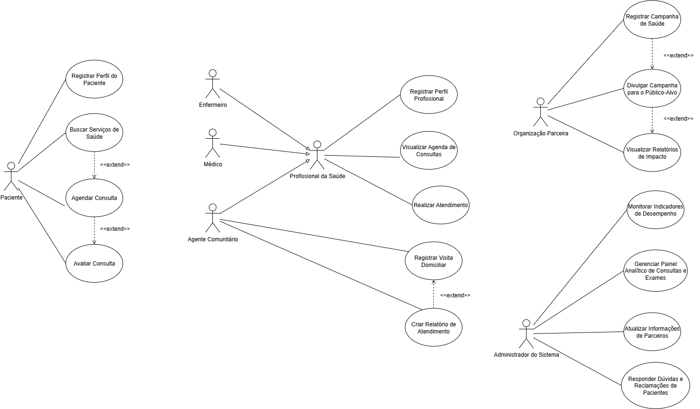
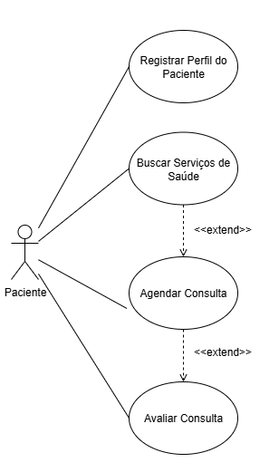
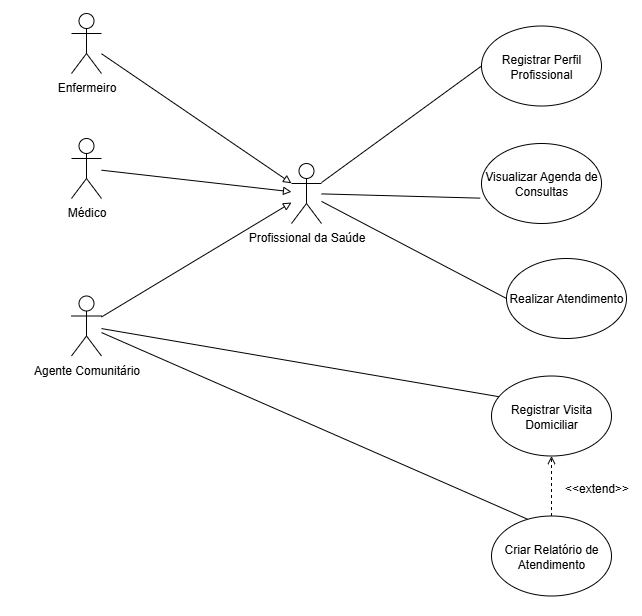
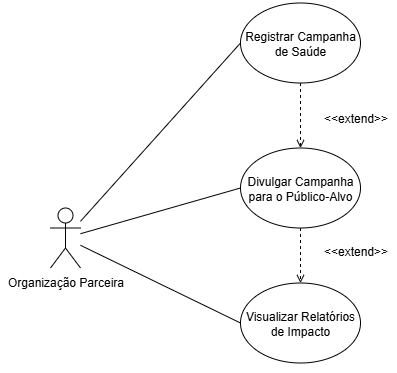
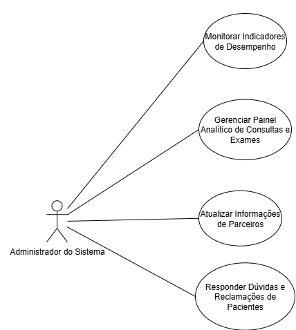

UC
1. Contexto do Projeto
O projeto "ConnectCare" foi concebido para atender a comunidades remotas com acesso limitado a serviços de saúde, como a Vila Esperança. A plataforma foi projetada para superar barreiras como a falta de transporte e informações, facilitando o acesso dos moradores a cuidados médicos de forma eficiente e acessível.
Missão Principal: Garantir que comunidades vulneráveis tenham acesso facilitado e eficiente a serviços de saúde, promovendo bem-estar social e impacto positivo por meio da tecnologia.
Objetivos Específicos:
- Expandir o acesso aos serviços de saúde, permitindo que pacientes localizem e agendem consultas com facilidade.
- Automatizar processos de atendimento, como agendamento online e gerenciamento de prontuários.
- Promover campanhas de saúde comunitária, como vacinação e palestras educacionais.
- Monitorar o impacto social e operacional através de ferramentas analíticas.
2. Atores do Sistema
- Paciente: Público principal, utiliza a plataforma para acessar serviços de saúde.
- Profissional de Saúde: Médicos e enfermeiros que gerenciam atendimentos e prontuários.
- Agente Comunitário: Realiza visitas domiciliares e coleta dados de saúde da comunidade.
- Organização Parceira: ONGs, hospitais e instituições que divulgam e gerenciam iniciativas de saúde.
- Administrador do Sistema: Responsável pela manutenção, monitoramento e gerenciamento da plataforma.

3. Índice de Casos de Uso
3.1 Paciente

- UC01: Registrar Perfil do Paciente
- UC02: Buscar Serviços de Saúde
- UC03: Agendar Consulta
- UC04: Avaliar Consulta
3.2 Profissional de Saúde

3.3 Agente Comunitário
3.4 Organização Parceira

- UC10: Registrar Campanha de Saúde
- UC11: Divulgar Campanha para Público-Alvo
- UC12: Visualizar Relatórios de Impacto
3.5 Administrador do Sistema

- UC13: Monitorar Indicadores de Desempenho
- UC14: Gerenciar Painel Analítico de Consultas e Exames
- UC15: Atualizar Informações de Parceiros
- UC16: Responder Dúvidas e Reclamações de Pacientes
4. Especificação dos Casos de Uso
UC01: Registrar Perfil do Paciente
1. Breve Descrição
Este caso de uso permite que um novo Paciente crie seu perfil básico na plataforma ConnectCare. O registro é o primeiro passo para que o usuário possa acessar os demais serviços do sistema, como a busca e o agendamento de consulta.
2. Atores
- Primário: Paciente
3. Fluxo Principal de Eventos
Este caso de uso é iniciado quando um novo usuário seleciona a opção para se registrar na plataforma.
- 3.1. O sistema apresenta ao Paciente um formulário de registro.
- 3.2. O Paciente preenche as informações solicitadas no formulário. [RN01]
- 3.3. O Paciente submete o formulário para criar seu perfil.
- 3.4. O sistema valida as informações preenchidas. [RN01] [FE01]
- 3.5. O sistema cria um novo perfil de paciente, armazenando as informações de forma segura. [RE01] [FE02]
- 3.6. O sistema exibe uma mensagem confirmando que o registro foi realizado com sucesso.
- 3.7. O caso de uso é encerrado.
4. Fluxos Alternativos
- Nenhum fluxo alternativo foi identificado para esta versão do caso de uso.
5. Fluxos de Exceção
- [FE01] Validação de Informações
- No passo 3.4 do Fluxo Principal, se o sistema detectar que uma ou mais informações do formulário são inválidas (ex: campo obrigatório em branco, formato incorreto), ele exibirá uma mensagem de erro indicando os campos a serem corrigidos. O fluxo retorna ao passo 3.2 para que o Paciente possa revisar e corrigir os dados.
- [FE02] Falha na Criação do Perfil
- No passo 3.5 do Fluxo Principal, se ocorrer um erro técnico que impeça o sistema de salvar o novo perfil (ex: falha no banco de dados), o sistema deverá exibir uma mensagem de erro ao usuário, informando sobre a instabilidade e sugerindo que tente novamente mais tarde. O erro técnico deve ser registrado para análise do administrador. O fluxo retorna para o passo 3.7.
6. Requisitos Especiais
- [RE01] Segurança da Informação: OO sistema deve garantir a segurança das informações armazenadas, estando em conformidade com as regulamentações de proteção de dados, para promover um ambiente seguro e confiável.
- [RE02] usabilidade: OA interface de registro deve ser simples e projetada para funcionar em dispositivos com capacidades limitadas.
7. Regras de Negócio
- [RN01] Campos de Registro: As informações que o formulário de registro devem constar são as seguintes:
| Nome do Campo | Formato | Obrigatoriedade |
|---|---|---|
| Nome do Paciente | Texto | Sim |
| Idade | Número Inteiro | Sim |
| Condições de Saúde/Alergias | Texto | Sim |
- [RN02] Notificações Pré-Consulta: Antes da data da consulta, o sistema deve enviar notificações ao paciente com lembretes e informações relevantes, como a necessidade de levar documentos de identificação e o uso de máscara no local.
8. Pré-Condições
- O usuário que inicia este caso de uso não deve possuir um cadastro prévio ou estar autenticado no sistema.
9. Pós-Condições
- [PCO01] Perfil do Paciente Criado: Um novo registro de paciente existe no banco de dados do sistema.
- [PCO02] Paciente Autenticado: Ao final do processo, o paciente está logado na plataforma e pode acessar outras funcionalidades.
10. Pontos de Extensão
- Nenhum ponto de extensão foi identificado para esta versão do caso de uso.
UC02: Buscar Serviços de Saúde
1. Breve Descrição
Este caso de uso permite que o Paciente localize serviços de saúde essenciais na plataforma. O sistema pode mapear e listar clínicas, hospitais e campanhas de saúde próximas, facilitando o acesso do usuário aos cuidados médicos.
2. Atores
- Primário: Paciente
3. Fluxo Principal de Eventos
Este caso de uso é iniciado quando o Paciente, já logado, seleciona a opção para buscar serviços de saúde.
- 3.1. O sistema apresenta uma interface de busca.
- 3.2. O Paciente utiliza os filtros para refinar sua busca, podendo informar critérios como localização, tipo de atendimento e disponibilidade. [FA01]
- 3.3. O Paciente aciona o comando para realizar a busca.
- 3.4. O sistema processa os critérios e exibe uma lista de serviços de saúde, como a unidade mais próxima com os horários disponíveis. [FE01]
- 3.5. O Paciente seleciona um serviço da lista para visualizar mais detalhes.
- 3.6. O caso de uso é encerrado, podendo ser estendido. [PE01]
4. Fluxos Alternativos
- [FA01] Indicação de Falta de Transporte
- No passo 3.2, caso o paciente indique que não possui acesso a transporte, o sistema pode incluir nos resultados da busca campanhas móveis de atendimento ou agentes comunitários disponíveis para visitas domiciliares.
5. Fluxos de Exceção
- [FE01] Nenhum Serviço Encontrado
- No passo 3.4, se a busca não encontrar nenhum serviço que corresponda aos filtros informados, o sistema exibirá uma mensagem informativa. O fluxo retorna ao passo 3.2 para que o Paciente possa alterar os critérios da busca.
6. Requisitos Especiais
- [RE01] Integração com Mapa: O sistema deve ser capaz de exibir os resultados em um mapa simplificado, que pode ser acessado offline para ajudar o paciente a encontrar a unidade de saúde.
8. Pré-Condições
- O Paciente deve estar logado na plataforma.
9. Pós-Condições
- [PCO01] Informação Obtida: O Paciente visualizou uma lista de serviços de saúde que atendem aos seus critérios de busca.
10. Pontos de Extensão
- [PE01] Estender o Caso de Uso: Agendar Consulta
- Local: No passo 3.6, após o paciente visualizar os detalhes de um serviço de saúde.
- Condição: O sistema deve oferecer a opção de iniciar o caso de uso "Agendar Consulta" para que o paciente possa marcar um horário no serviço selecionado.
UC03: Agendar Consulta
1. Breve Descrição
Este caso de uso permite que o ator Paciente agende consultas (online ou presenciais) de forma simples e rápida através da plataforma ConnectCare. Para isso, o paciente primeiro busca por serviços de saúde disponíveis e depois seleciona um horário para o agendamento.
2. Atores
- Primário: Paciente
3. Fluxo Principal de Eventos
Este caso de uso é iniciado quando o Paciente, já logado, seleciona a opção para agendar uma nova consulta.
- 3.1. O sistema apresenta um menu com os tipos de serviços de saúde ou especialidades disponíveis (ex: Clínica Geral, Pediatria, Campanhas de Vacinação). [RN01]
- 3.2. O Paciente seleciona o serviço desejado no menu.
- 3.3. O sistema exibe uma lista de unidades de saúde e/ou profissionais que oferecem o serviço selecionado, juntamente com os horários disponíveis. [FE01] [FA01]
- 3.4. O Paciente seleciona a unidade e o horário desejado e solicita o agendamento.
- 3.5. O sistema salva a consulta, associa ao histórico do Paciente e exibe uma mensagem de confirmação com detalhes do agendamento (local, data, horário). [FE02]
- 3.6. O sistema programa o envio de notificações futuras com informações relevantes sobre a consulta. [RN02]
- 3.7. O caso de uso é encerrado. [PE01]
4. Fluxos Alternativos
- [FA01] Paciente com dificuldade de transporte
- Durante a execução do passo 3.3, caso o Paciente indique dificuldade de transporte, o sistema, além dos resultados padrão, pode indicar campanhas móveis de atendimento ou a disponibilidade de agentes comunitários para visitas domiciliares. O fluxo então retorna ao passo 3.3, com a lista de opções ajustada.
5. Fluxos de Exceção
- [FE01] Nenhum serviço encontrado
- No passo 3.3 do Fluxo Principal, se para o serviço selecionado não houver nenhum horário disponível, o sistema exibirá uma mensagem informativa. O fluxo retorna ao passo 3.1 para que o Paciente possa selecionar outro serviço.
- [FE02] Falha ao Salvar Agendamento
- No passo 3.5 do Fluxo Principal, se ocorrer um erro técnico que impeça o sistema de salvar a consulta (ex: falha no banco de dados), o sistema deverá exibir uma mensagem de erro ao paciente, informando sobre a instabilidade e solicitando que tente novamente. O erro técnico deve ser registrado para análise do administrador. O fluxo retoma ao 3.7
6. Requisitos Especiais
- [RE01] Usabilidade e Desempenho: O aplicativo deve ser projetado para funcionar em dispositivos simples e com conexões de internet limitadas.
- [RE02] Acessibilidade: O sistema deve fornecer um mapa simplificado, que possa ser acessado offline, para ajudar o paciente a encontrar a unidade de saúde.
7. Regras de Negócio
- [RN01] Lógica de Sugestão de Serviços: Para sugerir a unidade de saúde mais adequada, o sistema utiliza algoritmos que consideram o perfil do paciente (idade, condições preexistentes) e os dados da busca (localização, sintomas).
- [RN02] Notificações Pré-Consulta: Antes da data da consulta, o sistema deve enviar notificações ao paciente com lembretes e informações relevantes, como a necessidade de levar documentos de identificação e o uso de máscara no local.
8. Pré-Condições
- [PC01] Paciente Autenticado: O Paciente deve estar logado no sistema para iniciar este caso de uso.
9. Pós-Condições
- [PCO01] Consulta Agendada: Uma nova consulta é registrada no sistema e fica disponível na agenda do profissional de saúde e no histórico do paciente.
- [PCO02] Confirmação Gerada: O paciente recebe a confirmação do agendamento com os detalhes necessários.
10. Pontos de Extensão
- [PE01] Estender o Caso de Uso: Avaliar Consulta
- Local: Após a finalização da consulta agendada (evento que ocorre após o término deste caso de uso).
- Condição: O sistema deve estender o caso de uso "Avaliar Consulta", solicitando ao paciente que avalie o atendimento recebido, podendo oferecer incentivos como pontos de fidelidade.
UC04: Avaliar Consulta
1. Breve Descrição
Este caso de uso permite que o Paciente forneça feedback sobre uma consulta realizada. O paciente pode atribuir notas para a qualidade do serviço e para a eficiência do aplicativo, contribuindo para a melhoria contínua dos serviços oferecidos e para a geração de indicadores de satisfação.
2. Atores
- Primário: Paciente
3. Relação de Extensão
- Este caso de uso se estende do caso de uso "Agendar Consulta" (UC03).
- Ponto de Extensão: [PE01] - Ocorre após a consulta, que foi agendada previamente, ser finalizada.
- Condição: O sistema solicita ao paciente que avalie o atendimento recebido.
4. Fluxo Principal de Eventos
Este caso de uso é iniciado quando o sistema, após uma consulta ser concluída, solicita ao Paciente que realize uma avaliação.
- 4.1. O Paciente aceita o convite para avaliar a consulta.
- 4.2. O sistema apresenta um formulário de avaliação.
- 4.3. O Paciente atribui notas à qualidade do serviço e à eficiência do aplicativo.
- 4.4. O Paciente submete a avaliação.
- 4.5. O sistema valida os dados inseridos [FE01].
- 4.6. O sistema registra a avaliação, associando-a à consulta correspondente. [FE02] [RN01] [RN02]
- 4.7. O sistema exibe uma mensagem de agradecimento ao Paciente.
- 4.8. O caso de uso é encerrado.
5. Fluxos Alternativos
- Nenhum fluxo alternativo foi identificado para esta versão do caso de uso.
6. Fluxos de Exceção
- [FE01] Dados de Avaliação Inválidos
- No passo 4.5 do Fluxo Principal, se o Paciente submeter o formulário sem preencher os campos de nota obrigatórios, o sistema exibirá uma mensagem de erro solicitando o preenchimento. O fluxo retorna ao passo 4.3.
- [FE02] Falha ao Registrar Avaliação
- No passo 4.6 do Fluxo Principal, se ocorrer um erro técnico que impeça o sistema de salvar a avaliação (ex: falha no banco de dados), o sistema deverá exibir uma mensagem de erro ao paciente, informando sobre a instabilidade e solicitando que tente novamente mais tarde. O erro técnico deve ser registrado para análise do administrador. O fluxo retorna para o passo 4.8 e nenhum ponto de fidelidade é concedido.
7. Requisitos Especiais
- [RE01] Anonimato (Opcional): Deve-se avaliar a necessidade de permitir que as avaliações sejam enviadas de forma anônima para encorajar feedbacks mais sinceros.
8. Regras de Negócio
- [RN01] Utilização dos Dados de Avaliação: As avaliações dos usuários são utilizadas para gerar relatórios e métricas de impacto, que podem ser monitorados por organizações parceiras e pelo administrador do sistema para tomada de decisões estratégicas.
- [RN02] Incentivo por Feedback: Como incentivo, ao completar uma avaliação, o paciente ganha pontos de fidelidade que podem ser utilizados para descontos em farmácias parceiras listadas no "ConnectCare".
9. Pré-Condições
- O Paciente deve estar autenticado no sistema.
- Deve existir no histórico do Paciente o registro de uma consulta recentemente concluída.
10. Pós-Condições
- [PCO01] Avaliação Registrada: A avaliação do Paciente é armazenada de forma segura no sistema.
- [PCO02] Pontos de Fidelidade Atualizados: O saldo de pontos de fidelidade do Paciente é atualizado.
- [PCO03] Dados Analíticos Disponíveis: A nova avaliação contribui para os indicadores de satisfação do paciente e de qualidade do serviço.
UC05: Registrar Perfil Profissional
1. Breve Descrição
Este caso de uso permite que profissionais da saúde, como médicos, enfermeiros e agentes comunitários, criem um perfil profissional na plataforma ConnectCare. O registro é um pré-requisito para que possam gerenciar seus atendimentos, disponibilizar horários na agenda e interagir com os pacientes do sistema.
2. Atores
- Primário: Profissional de Saúde
3. Fluxo Principal de Eventos
Este caso de uso é iniciado quando um novo Profissional de Saúde acessa a plataforma e seleciona a opção para criar um perfil profissional.
- 3.1. O sistema apresenta um formulário de registro profissional. [RN01]
- 3.2. O Profissional de Saúde preenche as informações solicitadas, incluindo dados pessoais, número de licença profissional (ex: CRM/COREN), suas especializações e seus horários de disponibilidade.
- 3.3. O Profissional de Saúde submete o formulário para criação do perfil.
- 3.4. O sistema valida as informações fornecidas conforme as regras de negócio. [RN01] [FE01]
- 3.5. O sistema cria o novo perfil profissional, que fica pendente de ativação para aparecer nas buscas de pacientes. [FE02]
- 3.6. O sistema exibe uma mensagem de sucesso, informando que o cadastro foi realizado e que o profissional pode acessar suas ferramentas.
- 3.7. O caso de uso é encerrado.
4. Fluxos Alternativos
- Nenhum fluxo alternativo foi identificado para esta versão do caso de uso.
5. Fluxos de Exceção
- [FE01] Dados de Registro Inválidos
- No passo 3.4 do Fluxo Principal, se o sistema detectar que uma ou mais informações são inválidas (ex: campo obrigatório em branco, formato de licença incorreto), ele exibirá uma mensagem de erro indicando os campos a serem corrigidos. O fluxo retorna ao passo 3.2.
- [FE02] Falha na Criação do Perfil
- No passo 3.5 do Fluxo Principal, se ocorrer um erro técnico que impeça o sistema de salvar o novo perfil (ex: falha no banco de dados), o sistema deverá exibir uma mensagem de erro ao usuário, informando sobre a instabilidade e sugerindo que tente novamente mais tarde. O erro técnico deve ser registrado para análise do administrador. O fluxo retorna para o passo 3.7.
6. Requisitos Especiais
- [RE01] Verificação de Credenciais: O sistema deve prever um mecanismo para a verificação das credenciais profissionais (diploma, licença de atuação) para garantir a segurança e a confiabilidade da plataforma.
- [RE02] Segurança da Informação: Os dados do profissional devem ser armazenados de forma segura, em conformidade com as regulamentações de proteção de dados.
7. Regras de Negócio
- [RN01] Campos Profissionais: As informações do formulário de registro devem constar as seguintes informações:
| Nome do Campo | Formato | Obrigatoriedade |
|---|---|---|
| Nome Completo | Texto | Sim |
| ID Profissional (CRM/COREN) | Texto Formatado | Sim |
| Especializações | Texto | Sim |
| Horários de Disponibilidade | Estrutura de data/hora | Sim |
8. Pré-Condições
- O usuário que inicia este caso de uso deve ser um profissional da área da saúde que ainda não possui um perfil na plataforma.
9. Pós-Condições
- [PCO01] Perfil Profissional Criado: Um novo perfil para o Profissional de Saúde existe no banco de dados do sistema.
- [PCO02] Acesso às Ferramentas: Uma vez integrado ao sistema, o profissional pode acessar funcionalidades como a visualização da agenda de consultas e a organização do seu fluxo de trabalho.
- [PCO03] Perfil Habilitado para Atendimento: Após a devida verificação (conforme [RE01]), o perfil do profissional se torna público para que pacientes possam agendar consultas.
10. Pontos de Extensão
- Nenhum ponto de extensão foi identificado para esta versão do caso de uso.
UC06: Visualizar Agenda de Consultas
1. Breve Descrição
Este caso de uso permite que o Profissional de Saúde visualize sua agenda de consultas e organize seu fluxo de trabalho. O sistema exibe os agendamentos confirmados, permitindo que o profissional acesse os detalhes de cada atendimento planejado.
2. Atores
- Primário: Profissional de Saúde
3. Fluxo Principal de Eventos
Este caso de uso é iniciado quando o Profissional de Saúde, já logado, seleciona a opção para visualizar sua agenda.
- 3.1. O sistema recupera e exibe a agenda de consultas do Profissional de Saúde, mostrando os agendamentos do dia por padrão. [RN01]
- 3.2. O Profissional de Saúde pode navegar pela agenda, visualizando consultas de outros períodos (ex: semana, mês). [RN02]
- 3.3. O Profissional de Saúde seleciona uma consulta específica na lista para ver mais informações.
- 3.4. O sistema exibe os detalhes da consulta selecionada, incluindo o nome do paciente, horário e o motivo do atendimento. [FE01]
- 3.5. O caso de uso é encerrado.
4. Fluxos Alternativos
- Nenhum fluxo alternativo foi identificado para esta versão do caso de uso.
5. Fluxos de Exceção
- [FE01] Consulta sem Detalhes
- No passo 3.4 do Fluxo Principal, se uma consulta não possuir detalhes adicionais (além do nome e horário), o sistema apenas exibirá as informações básicas disponíveis.
6. Requisitos Especiais
- [RE01] Sincronização em Tempo Real: A agenda deve ser atualizada em tempo real para refletir novos agendamentos ou cancelamentos feitos pelos pacientes.
- [RE02] Privacidade dos Dados: O acesso aos detalhes da consulta e ao histórico do paciente deve ser restrito e seguro, garantindo a confidencialidade das informações.
7. Regras de Negócio
- [RN01] Exibição de Consultas: A agenda deve exibir apenas as consultas que foram confirmadas e que estão associadas ao perfil do Profissional de Saúde que está logado.
- [RN02] Filtrar Agenda: Pode ser aplicado filtros para refinar a visualização da agenda, como por um intervalo de datas específico ou pelo nome de um paciente. O sistema então atualiza a lista de consultas exibida de acordo com os filtros aplicados.
8. Pré-Condições
- O Profissional de Saúde deve estar autenticado no sistema.
- O Profissional de Saúde deve possuir um perfil profissional ativo na plataforma.
9. Pós-Condições
- [PCO01] Informações Visualizadas: O Profissional de Saúde obteve as informações sobre seus agendamentos.
10. Pontos de Extensão
- Nenhum ponto de extensão foi identificado para esta versão do caso de uso.
UC07: Realizar Atendimento
1. Breve Descrição
Este caso de uso permite que o Profissional de Saúde conduza um atendimento, acesse o histórico médico do paciente e atualize o prontuário digital em tempo real, registrando diagnósticos, prescrições e orientações. O objetivo é garantir um atendimento mais preciso, eficiente e com menos chances de erros.
2. Atores
- Primário: Profissional de Saúde.
3. Fluxo Principal de Eventos
Este caso de uso é iniciado quando o Profissional de Saúde seleciona a opção para iniciar um atendimento agendado.
- 3.1. O sistema exibe o histórico médico do paciente, que inclui registros de consultas anteriores, resultados de exames e outros dados relevantes.
- 3.2. O Profissional de Saúde realiza o atendimento.
- 3.3. Durante ou após o atendimento, o Profissional de Saúde acessa a área de atualização do prontuário digital do paciente.
- 3.4. O Profissional de Saúde registra as novas informações, como diagnósticos, prescrições de medicamentos e orientações de cuidados. [FA01]
- 3.5. O Profissional de Saúde salva as atualizações no prontuário.
- 3.6. O sistema valida e armazena as novas informações no prontuário do paciente em tempo real.
- 3.7. O sistema atualiza o status da consulta para "Concluída" e disponibiliza as novas orientações para o paciente no aplicativo.
- 3.8. O caso de uso é encerrado.
4. Fluxos Alternativos
- [FA01] Registrar Visita Domiciliar (para Agentes Comunitários)
- No passo 3.4, se o ator for um Agente Comunitário, o sistema pode apresentar funcionalidades específicas para o registro de visitas domiciliares e a criação de relatórios sobre as condições de saúde observadas na comunidade.
6. Fluxos de Exceção
- [FE01] Falha ao Salvar
- Se ocorrer um erro de sistema durante o passo 3.6 (ex: perda de conexão), o sistema deve notificar o Profissional de Saúde sobre a falha e, se possível, manter os dados inseridos para uma nova tentativa de salvamento.
7. Requisitos Especiais
- [RE01] Integridade dos Dados: O sistema deve garantir que todas as atualizações no prontuário sejam salvas de forma íntegra e associadas corretamente ao paciente e à consulta.
- [RE02] Acesso em Tempo Real: As informações do prontuário devem ser acessíveis e atualizadas em tempo real para garantir que o profissional tenha sempre os dados mais recentes durante o atendimento.
8. Regras de Negócio
- [RN01] Auditoria: Todas as alterações realizadas no prontuário de um paciente devem ser registradas (quem alterou, o quê e quando) para fins de auditoria e segurança.
9. Pré-Condições
- O Profissional de Saúde deve estar autenticado no sistema.
- O atendimento deve ter sido iniciado a partir de uma consulta agendada e ativa.
10. Pós-Condições
- [PCO01] Prontuário do Paciente Atualizado: O prontuário digital do paciente contém as novas informações do atendimento recém-realizado.
- [PCO02] Consulta Finalizada: O status da consulta na agenda é alterado para "Concluída".
- [PCO03] Orientações Disponíveis ao Paciente: As prescrições e orientações ficam disponíveis para o paciente em seu perfil no aplicativo.
UC08: Registrar Visita Domiciliar
1. Breve Descrição
Este caso de uso permite que o Agente Comunitário utilize ferramentas específicas para registrar visitas domiciliares. O registro dessas informações é fundamental para a identificação de áreas prioritárias e para a organização de campanhas preventivas na comunidade.
2. Atores
- Primário: Agente Comunitário
3. Fluxo Principal de Eventos
Este caso de uso é iniciado quando o Agente Comunitário, após realizar uma visita, acessa a plataforma para registrar as informações.
- 3.1. O Agente Comunitário seleciona a opção para registrar uma nova visita domiciliar.
- 3.2. O sistema solicita a identificação do paciente ou da família visitada.
- 3.3. O Agente Comunitário insere os dados de identificação.
- 3.4. O sistema exibe o formulário de registro de visita domiciliar.
- 3.5. O Agente Comunitário preenche as informações sobre a visita, incluindo observações sobre as condições de saúde encontradas.
- 3.6. O Agente Comunitário submete o formulário.
- 3.7. O sistema valida as informações inseridas. [FE01]
- 3.8. O sistema armazena o registro da visita, associando-o ao paciente, se aplicável, e disponibilizando os dados para análise.
- 3.9. O sistema exibe uma mensagem de confirmação de que a visita foi registrada com sucesso.
- 3.10. O caso de uso é encerrado, podendo ser estendido. [PE01]
4. Fluxos Alternativos
- Nenhum fluxo alternativo foi identificado para esta versão do caso de uso.
5. Fluxos de Exceção
- [FE01] Dados Incompletos
- No passo 3.7 do Fluxo Principal, se campos obrigatórios (como a data da visita ou a identificação do paciente) não forem preenchidos, o sistema exibirá uma mensagem de erro e solicitará o preenchimento. O fluxo retorna ao passo 3.5.
6. Requisitos Especiais
- [RE01] Funcionalidade Offline: O aplicativo deve permitir que o Agente Comunitário registre os dados da visita em modo offline, com sincronização automática assim que uma conexão com a internet for restabelecida, visto que as visitas podem ocorrer em áreas com conectividade limitada.
7. Regras de Negócio
- [RN01] Estrutura dos Dados para Análise: As informações coletadas durante a visita devem ser estruturadas de forma a facilitar a criação de relatórios e a análise de dados para identificar áreas prioritárias na comunidade.
8. Pré-Condições
- O Agente Comunitário deve estar autenticado no sistema.
- Uma visita domiciliar deve ter sido realizada fisicamente.
9. Pós-Condições
- [PCO01] Registro da Visita Armazenado: As informações sobre a visita domiciliar são salvas no sistema.
- [PCO02] Dados Disponíveis para Planejamento: As informações registradas podem ser utilizadas para ajudar na organização de campanhas preventivas e na identificação de prioridades de saúde na comunidade.
10. Pontos de Extensão
- [PE01] Estender o Caso de Uso: Criar Relatório de Atendimento
- Local: No passo 3.9, após registrar uma ou mais visitas.
- Condição: O Agente Comunitário pode iniciar o caso de uso "Criar Relatório de Atendimento" para consolidar as informações das visitas e gerar um relatório sobre as condições de saúde da comunidade.
UC09: Criar Relatório de Atendimento
1. Breve Descrição
Este caso de uso permite que o Agente Comunitário crie relatórios consolidados sobre as condições de saúde nas comunidades atendidas. Estes relatórios são gerados a partir dos dados coletados nas visitas domiciliares e servem como uma ferramenta estratégica para o planejamento de ações de saúde.
2. Atores
- Primário: Agente Comunitário
3. Relação de Extensão
- Este caso de uso estende o caso de uso "Registrar Visita Domiciliar" (UC10).
- Ponto de Extensão: [PE01] - Ocorre após o agente ter registrado uma ou mais visitas.
- Condição: O Agente Comunitário decide consolidar as informações registradas em um relatório formal.
4. Fluxo Principal de Eventos
Este caso de uso é iniciado quando o Agente Comunitário seleciona a opção para criar um novo relatório.
- 4.1. O sistema solicita que o Agente Comunitário defina os parâmetros para o relatório (ex: período de tempo, área da comunidade).
- 4.2. O Agente Comunitário insere os parâmetros desejados.
- 4.3. O sistema busca e agrupa os dados das visitas domiciliares que correspondem aos parâmetros informados. [FE01]
- 4.4. O sistema gera um rascunho do relatório, consolidando as informações.
- 4.5. O Agente Comunitário revisa o relatório gerado e pode adicionar notas ou conclusões.
- 4.6. O Agente Comunitário finaliza e salva o relatório.
- 4.7. O sistema armazena o relatório final como um documento, que pode ser acessado por gestores e organizações parceiras.
- 4.8. O sistema exibe uma mensagem de confirmação de que o relatório foi criado com sucesso.
- 4.9. O caso de uso é encerrado.
5. Fluxos Alternativos
- [FA01] Exportar Relatório
- No passo 4.7, o Agente Comunitário pode ter a opção de exportar o relatório em um formato como PDF, para compartilhamento externo ou impressão.
6. Fluxos de Exceção
- [FE01] Nenhum Dado Encontrado
- No passo 4.3, se não houver registros de visitas para os parâmetros informados, o sistema exibirá uma mensagem informativa. O fluxo retorna ao passo 4.1 para que o agente possa definir novos parâmetros.
7. Requisitos Especiais
- [RE01] Formato do Relatório: Os relatórios gerados devem ser claros, bem estruturados e de fácil interpretação para que sejam eficazes como ferramenta de planejamento.
8. Regras de Negócio
- [RN01] Agregação de Dados: A lógica do sistema deve agregar corretamente os dados de múltiplas visitas para fornecer uma visão resumida e precisa das condições de saúde da comunidade.
- [RN02] Controle de Acesso: Os relatórios gerados, por conterem dados sensíveis da comunidade, devem ter seu acesso restrito a usuários autorizados (gestores, administradores).
9. Pré-Condições
- O Agente Comunitário deve estar autenticado no sistema.
- Deve existir pelo menos um registro de visita domiciliar no sistema para os parâmetros desejados.
10. Pós-Condições
- [PCO01] Relatório Criado: Um novo documento de relatório consolidado é armazenado no sistema.
- [PCO02] Suporte à Decisão: O relatório está disponível para auxiliar na identificação de áreas prioritárias e na organização de campanhas preventivas.
UC10: Registrar Campanha de Saúde
1. Breve Descrição
Este caso de uso permite que Organizações Parceiras (ONGs, hospitais, instituições governamentais) registrem suas iniciativas de saúde na plataforma. O registro pode incluir campanhas de vacinação, mutirões de atendimento ou ações educativas.
2. Atores
- Primário: Organização Parceira
3. Fluxo Principal de Eventos
Este caso de uso é iniciado quando um representante da Organização Parceira, já logado, seleciona a opção para registrar uma nova campanha de saúde.
- 3.1. O sistema apresenta o formulário de registro de campanha.
- 3.2. A Organização Parceira preenche as informações da iniciativa, detalhando o público-alvo, a localização e a duração.
- 3.3. A Organização Parceira submete o formulário.
- 3.4. O sistema valida as informações fornecidas. [FE01]
- 3.5. O sistema cria um novo registro para a campanha de saúde na plataforma.
- 3.6. O sistema exibe uma mensagem de confirmação de que a campanha foi registrada com sucesso.
- 3.7. O caso de uso é encerrado, podendo ser estendido. [PE01]
4. Fluxos Alternativos
- Nenhum fluxo alternativo foi identificado para esta versão do caso de uso.
5. Fluxos de Exceção
- [FE01] Dados Incompletos
- No passo 3.4 do Fluxo Principal, se campos obrigatórios (como localização ou duração) não forem preenchidos, o sistema exibirá uma mensagem de erro e solicitará o preenchimento. O fluxo retorna ao passo 3.2.
6. Requisitos Especiais
- [RE01] Aprovação de Campanhas: O sistema deve prever um mecanismo onde um administrador possa aprovar novas campanhas antes que elas sejam divulgadas, garantindo a legitimidade e a segurança das iniciativas promovidas na plataforma.
7. Regras de Negócio
- [RN01] Estrutura de Dados para Divulgação: As informações registradas, especialmente o público-alvo, devem ser estruturadas para permitir que a plataforma promova a campanha para os usuários mais relevantes.
8. Pré-Condições
- O usuário deve ser um representante de uma Organização Parceira autenticado no sistema.
9. Pós-Condições
- [PCO01] Campanha Registrada: Uma nova campanha de saúde é armazenada no sistema.
- [PCO02] Pronta para Divulgação: Após o cadastro, a campanha está pronta para ser promovida aos usuários da plataforma.
10. Pontos de Extensão
- [PE01] Estender para os Casos de Uso: Segmentar e Divulgar Campanha
- Local: No passo 3.7, após o registro bem-sucedido da campanha.
- Condição: A Organização Parceira pode iniciar o caso de uso "Divulgar Campanha para Público-Alvo" para definir e alcançar os pacientes corretos com a iniciativa.
UC11: Divulgar Campanha para Público-Alvo
1. Breve Descrição
Este caso de uso permite que a Organização Parceira promova ativamente uma campanha de saúde para os usuários relevantes da plataforma. Utilizando os critérios de segmentação definidos anteriormente, o sistema envia notificações e alertas para o público-alvo, garantindo que a informação chegue a quem mais precisa.
2. Atores
- Primário: Organização Parceira
3. Fluxo Principal de Eventos
Este caso de uso é iniciado pela Organização Parceira após uma campanha ter sido registrada e devidamente segmentada.
- 3.1. A Organização Parceira seleciona a campanha que deseja divulgar.
- 3.2. O sistema recupera os critérios de segmentação associados a essa campanha (ex: localização, faixa etária, condições de saúde).
- 3.3. A Organização Parceira aciona o comando para iniciar a divulgação.
- 3.4. O sistema identifica todos os pacientes na plataforma que correspondem ao público-alvo definido. [FE01]
- 3.5. O sistema envia notificações e alertas personalizados sobre a campanha para os pacientes identificados. [RN01]
- 3.6. O sistema exibe uma mensagem de confirmação para a Organização Parceira, informando que a divulgação foi iniciada com sucesso.
- 3.7. O caso de uso é encerrado. [PE01]
4. Fluxos Alternativos
- Nenhum fluxo alternativo foi identificado para esta versão do caso de uso.
5. Fluxos de Exceção
- [FE01] Público-Alvo Vazio
- No passo 3.4, se o sistema não encontrar nenhum paciente que corresponda aos critérios de segmentação, ele exibirá uma mensagem informativa à Organização Parceira. O fluxo retorna ao passo 3.1, sugerindo a revisão da segmentação da campanha.
6. Requisitos Especiais
- [RE01] Canal de Notificação: As notificações devem ser enviadas por um canal eficaz dentro do aplicativo, garantindo alta visibilidade para os pacientes.
7. Regras de Negócio
- [RN01] Conteúdo da Notificação: A notificação enviada ao paciente deve conter as informações essenciais da campanha, como o objetivo, a data, o local e o público-alvo, de forma clara e concisa.
8. Pré-Condições
- O usuário da Organização Parceira deve estar autenticado no sistema.
- A campanha de saúde já deve ter sido registrada e segmentada na plataforma.
9. Pós-Condições
- [PCO01] Pacientes Notificados: O público-alvo da campanha recebeu a notificação sobre a iniciativa.
- [PCO02] Aumento do Engajamento Esperado: Espera-se um aumento na participação da comunidade na campanha divulgada.
10. Pontos de Extensão
- [PE01] Estender o Caso de Uso: Visualizar Relatórios de Impacto
- Local: Após a divulgação da campanha (passo 3.7).
- Condição: A Organização Parceira pode iniciar o caso de uso "Visualizar Relatórios de Impacto" para monitorar o alcance e a eficácia de suas ações, utilizando métricas como o número de participantes e as avaliações dos usuários.
UC12: Visualizar Relatórios de Impacto
1. Breve Descrição
Este caso de uso permite que a Organização Parceira monitore o impacto de suas ações por meio de relatórios gerados pela plataforma. Os relatórios apresentam métricas que ajudam a organização a avaliar a eficácia de suas campanhas de saúde.
2. Atores
- Primário: Organização Parceira
3. Relação de Extensão
- Este caso de uso estende o caso de uso "Divulgar Campanha para Público-Alvo" (UC14).
- Ponto de Extensão: [PE01] - Ocorre após uma campanha ter sido divulgada.
- Condição: A Organização Parceira deseja analisar os resultados e o alcance da iniciativa.
4. Fluxo Principal de Eventos
Este caso de uso é iniciado quando um representante da Organização Parceira seleciona a opção para visualizar os relatórios de impacto de suas campanhas.
- 4.1. O sistema exibe uma lista das campanhas realizadas pela Organização Parceira.
- 4.2. A Organização Parceira seleciona a campanha da qual deseja visualizar o relatório.
- 4.3. O sistema gera e apresenta o relatório de impacto para a campanha selecionada. [FE01]
- 4.4. O relatório exibe métricas como o número de participantes e as avaliações dos usuários.
- 4.5. A Organização Parceira analisa os dados do relatório.
- 4.6. O caso de uso é encerrado.
5. Fluxos Alternativos
- [FA01] Exportar Relatório
- No passo 4.4, o sistema pode oferecer à Organização Parceira a opção de exportar o relatório (ex: em formato PDF) para uso externo.
6. Fluxos de Exceção
- [FE01] Dados Insuficientes para Relatório
- No passo 4.3, se uma campanha for muito recente e ainda não houver dados suficientes para gerar um relatório significativo, o sistema exibirá uma mensagem informativa. O fluxo retorna ao passo 4.1.
7. Requisitos Especiais
- [RE01] Visualização de Dados: Os relatórios devem utilizar elementos visuais, como gráficos e painéis, para apresentar as métricas de forma clara e de fácil interpretação.
- [RE02] Precisão dos Dados: O sistema deve garantir que as métricas apresentadas nos relatórios sejam precisas e reflitam fielmente os dados coletados pela plataforma.
8. Regras de Negócio
- [RN01] Cálculo de Métricas: O sistema deve ter uma lógica de cálculo bem definida para cada métrica do relatório, como a contagem de "número de participantes" e a média das "avaliações dos usuários".
9. Pré-Condições
- O usuário da Organização Parceira deve estar autenticado no sistema.
- A organização deve ter pelo menos uma campanha de saúde registrada e divulgada na plataforma.
10. Pós-Condições
- [PCO01] Impacto da Campanha Analisado: A Organização Parceira obteve acesso e analisou os dados de desempenho de sua iniciativa de saúde.
- [PCO02] Base para Decisões Estratégicas: As informações do relatório auxiliam a organização na formulação de futuras ações e políticas.
UC13: Monitorar Indicadores de Desempenho
1. Breve Descrição
Este caso de uso permite que o Administrador do Sistema monitore o funcionamento e o impacto da plataforma ConnectCare. Utilizando painéis analíticos, o administrador acompanha indicadores chave para garantir a saúde do sistema, identificar tendências e subsidiar decisões estratégicas.
2. Atores
- Primário: Administrador do Sistema
3. Fluxo Principal de Eventos
Este caso de uso é iniciado quando o Administrador do Sistema, já logado, acessa o painel de monitoramento.
- 3.1. O sistema exibe o painel analítico principal (dashboard).
- 3.2. O painel apresenta, por padrão, os principais indicadores de desempenho em tempo real ou referentes ao período atual.
- 3.3. Os indicadores exibidos incluem o número de usuários ativos, o volume de agendamentos e a taxa de satisfação dos pacientes. [RN01] [RN02]
- 3.4. O Administrador do Sistema analisa os gráficos e os números apresentados.
- 3.5. O Administrador do Sistema pode selecionar um indicador específico para ver mais detalhes ou dados históricos. [RN03]
- 3.6. O caso de uso é encerrado.
4. Fluxos Alternativos
- Nenhum fluxo alternativo foi identificado para esta versão do caso de uso.
5. Fluxos de Exceção
- [FE01] Falha na Carga de Dados
- Se ocorrer um erro ao carregar os dados para o painel no passo 3.2 (ex: falha na conexão com o banco de dados analítico), o sistema exibirá uma mensagem de erro e oferecerá uma opção para tentar recarregar os dados.
6. Requisitos Especiais
- [RE01] Visualização de Dados (Dashboard): Os indicadores devem ser apresentados em um painel com elementos visuais claros, como gráficos e medidores, para facilitar a interpretação rápida e intuitiva dos dados.
- [RE02] Desempenho do Painel: O carregamento dos dados e a atualização do painel devem ser rápidos para não comprometer a agilidade na tomada de decisão do administrador.
7. Regras de Negócio
- [RN01] Definição de Indicadores: O sistema deve ter regras claras para o cálculo de cada indicador:
- Usuários Ativos: Contagem de usuários únicos que realizaram login no último mês.
- Taxa de Satisfação: Média das notas atribuídas pelos pacientes no caso de uso "Avaliar Consulta".
- [RN02] Alertas Automáticos: O sistema pode ser configurado para gerar alertas automáticos para o administrador caso algum indicador atinja um limiar crítico (ex: queda abrupta no número de agendamentos).
- [RN03] Filtrar Indicadores: Pode-se aplicar filtros para visualizar os indicadores de um período de tempo específico (ex: última semana, último mês) ou de uma região/comunidade específica. O sistema atualiza o painel com os dados filtrados.
8. Pré-Condições
- O Administrador do Sistema deve estar autenticado na plataforma com as devidas permissões de acesso.
9. Pós-Condições
- [PCO01] Desempenho do Sistema Analisado: O Administrador do Sistema obteve uma visão clara sobre o desempenho atual e o impacto da plataforma.
- [PCO02] Base para Ações Administrativas: A análise dos indicadores fornece a base para que o administrador possa tomar ações corretivas, como corrigir erros técnicos ou realizar ajustes no sistema.
10. Pontos de Extensão
- Nenhum ponto de extensão foi identificado para esta versão do caso de uso.
UC14: Gerenciar Painel Analítico de Consultas e Exames
1. Breve Descrição
Este caso de uso permite que o Administrador do Sistema acesse um painel detalhado para visualizar e gerenciar o fluxo de consultas e exames que ocorrem na plataforma. É uma ferramenta essencial para supervisão operacional e resolução de inconsistências.
2. Atores
- Primário: Administrador do Sistema
3. Relação de Extensão
- Nenhum ponto de extensão foi identificado para esta versão do caso de uso.
4. Fluxo Principal de Eventos
Este caso de uso é iniciado quando o Administrador do Sistema seleciona a opção para gerenciar o painel de consultas e exames.
- 4.1. O sistema exibe o painel analítico com a listagem de todas as consultas e exames registrados. [RN01]
- 4.2. O Administrador do Sistema utiliza as ferramentas do painel para localizar um registro específico. [FA01]
- 4.3. O Administrador do Sistema seleciona um registro para visualizar seus detalhes completos.
- 4.4. O sistema exibe todas as informações associadas ao registro selecionado (paciente, profissional, datas, status, etc.). [FE01]
- 4.5. Após a análise, o administrador pode realizar uma ação de gerenciamento, se necessário. [FA02]
- 4.6. O caso de uso é encerrado.
5. Fluxos Alternativos
- [FA01] Buscar e Filtrar Registros
- No passo 4.2 do Fluxo Principal, o Administrador do Sistema pode aplicar filtros para refinar a lista de registros, utilizando critérios como intervalo de datas, status (agendado, concluído, cancelado), profissional ou paciente.
- [FA02] Realizar Ajuste no Sistema
- No passo 4.5, caso seja identificada uma inconsistência em um registro (ex: uma consulta travada em um status incorreto), o Administrador do Sistema pode realizar um ajuste manual, como a alteração do status do registro.
6. Fluxos de Exceção
- [FE01] Registro Não Encontrado
- No passo 4.4, se a busca ou filtro aplicado pelo administrador não retornar nenhum resultado, o sistema exibirá uma mensagem informativa. O fluxo retorna ao passo 4.2.
7. Requisitos Especiais
- [RE01] Auditoria de Ações: Todas as ações de gerenciamento realizadas pelo administrador neste painel (ex: alteração manual de status) devem ser registradas em um log de auditoria detalhado para garantir a rastreabilidade e a segurança.
- [RE02] Privacidade de Dados: O painel deve, por padrão, proteger informações sensíveis dos pacientes, que só devem ser totalmente expostas se for estritamente necessário para uma ação de gerenciamento.
8. Regras de Negócio
- [RN01] Fonte de Dados: O painel deve ser alimentado com dados precisos e em tempo real, refletindo o estado atual de todas as consultas e exames registrados na plataforma.
9. Pré-Condições
- O Administrador do Sistema deve estar autenticado na plataforma com as devidas permissões de acesso.
10. Pós-Condições
- [PCO01] Registros Inspecionados: O Administrador do Sistema obteve informações detalhadas sobre o status das consultas e exames.
- [PCO02] Sistema Ajustado (se FA02 executado): Uma inconsistência em um registro específico foi resolvida por meio de um ajuste manual. 3
UC15: Atualizar Informações de Parceiros
1. Breve Descrição
Este caso de uso permite que o Administrador do Sistema realize ajustes no sistema, especificamente para atualizar as informações de organizações parceiras (ONGs, hospitais, etc.). Manter esses dados corretos é crucial para o bom funcionamento das interações entre os parceiros e a plataforma.
2. Atores
- Primário: Administrador do Sistema
3. Fluxo Principal de Eventos ("Caminho Feliz")
Este caso de uso é iniciado quando o Administrador do Sistema precisa atualizar os dados de uma organização parceira.
- 3.1. O Administrador do Sistema seleciona a funcionalidade para gerenciar parceiros.
- 3.2. O sistema exibe uma lista com todas as organizações parceiras cadastradas. [RN01]
- 3.3. O Administrador do Sistema localiza e seleciona o parceiro cujas informações precisam ser atualizadas. [FE01]
- 3.4. O sistema exibe os dados cadastrais atuais do parceiro em um formulário editável.
- 3.5. O Administrador do Sistema modifica as informações necessárias.
- 3.6. O Administrador do Sistema submete as alterações.
- 3.7. O sistema valida os novos dados. [FE02]
- 3.8. O sistema salva as informações atualizadas no perfil da organização parceira.
- 3.9. O sistema exibe uma mensagem de confirmação de que as informações foram atualizadas com sucesso.
- 3.10. O caso de uso é encerrado.
4. Fluxos Alternativos
- Nenhum fluxo alternativo foi identificado para esta versão do caso de uso.
5. Fluxos de Exceção
- [FE01] Parceiro Não Encontrado
- No passo 3.3 do Fluxo Principal, se o Administrador do Sistema buscar por um parceiro que não existe, o sistema exibirá uma mensagem informativa. O fluxo retorna ao passo 3.2.
- [FE02] Dados Inválidos
- No passo 3.7 do Fluxo Principal, se as informações inseridas pelo administrador forem inválidas (ex: formato incorreto de um contato), o sistema exibirá uma mensagem de erro e retornará ao passo 3.5 para correção.
6. Requisitos Especiais
- [RE01] Auditoria: Todas as alterações realizadas nas informações de um parceiro devem ser registradas em um log de auditoria, detalhando quem realizou a mudança, o que foi alterado e quando.
7. Regras de Negócio
- [RN01] Consistência de Dados: A atualização das informações de um parceiro deve refletir em todas as áreas da plataforma onde esses dados são exibidos, como em campanhas de saúde ativas associadas a ele.
8. Pré-Condições
- O Administrador do Sistema deve estar autenticado na plataforma com as devidas permissões de acesso.
9. Pós-Condições
- [PCO01] Cadastro do Parceiro Atualizado: As informações da organização parceira selecionada estão atualizadas no banco de dados do sistema.
UC16: Responder Dúvidas e Reclamações de Pacientes
1. Breve Descrição
Este caso de uso permite que o Administrador do Sistema gerencie e responda às dúvidas e reclamações enviadas pelos usuários da plataforma. É uma função crucial para a manutenção da satisfação do usuário e para a identificação de problemas técnicos ou operacionais no sistema.
2. Atores
- Primário: Administrador do Sistema
3. Fluxo Principal de Eventos
Este caso de uso é iniciado quando o Administrador do Sistema acessa a área de suporte ou central de mensagens da plataforma.
- 3.1. O sistema exibe um painel com todas as dúvidas e reclamações recebidas, organizadas por data e status (ex: "Nova", "Em Andamento", "Resolvida"). [RN01] [RN02]
- 3.2. O Administrador do Sistema seleciona uma mensagem para analisar.
- 3.3. O sistema exibe o conteúdo completo da mensagem, incluindo os dados do usuário que a enviou.
- 3.4. O Administrador do Sistema analisa a solicitação e redige uma resposta.
- 3.5. O Administrador do Sistema envia a resposta ao usuário.
- 3.6. O sistema atualiza o status da mensagem para "Respondida" ou "Resolvida". [FA01]
- 3.7. O sistema envia a resposta para a caixa de entrada do usuário dentro da plataforma.
- 3.8. O caso de uso é encerrado.
4. Fluxos Alternativos
- [FA01] Marcar como Resolvida
- No passo 3.6 do Fluxo Principal, se a resposta enviada solucionar completamente a questão do usuário, o Administrador do Sistema pode marcar a conversa como "Resolvida", removendo-a da fila de pendências ativas.
5. Fluxos de Exceção
- [FE01] Falha no Envio da Mensagem
- Se ocorrer um erro de sistema ao tentar enviar a resposta no passo 3.7 (ex: falha de conexão), o sistema deve notificar o administrador e manter a mensagem redigida para uma nova tentativa de envio.
6. Requisitos Especiais
- [RE01] Templates de Resposta: O sistema deve permitir que o administrador crie e utilize templates de respostas para as dúvidas e reclamações mais frequentes, agilizando o processo de suporte.
- [RE02] Notificação ao Usuário: O usuário deve ser notificado (ex: via push notification) quando sua dúvida ou reclamação for respondida pelo administrador.
7. Regras de Negócio
- [RN01] Histórico de Conversas: Todas as interações (dúvidas, reclamações e respostas) devem ser armazenadas para compor um histórico de suporte do usuário, que pode ser consultado futuramente.
- [RN02] Priorização: O painel de mensagens deve permitir a priorização de solicitações urgentes.
8. Pré-Condições
- O Administrador do Sistema deve estar autenticado na plataforma com as devidas permissões de acesso.
- Deve existir pelo menos uma dúvida ou reclamação enviada por um usuário.
9. Pós-Condições
- [PCO01] Usuário Respondido: O usuário que enviou a solicitação recebeu uma resposta do administrador.
- [PCO02] Status da Solicitação Atualizado: O status da dúvida ou reclamação foi devidamente atualizado no sistema de suporte.